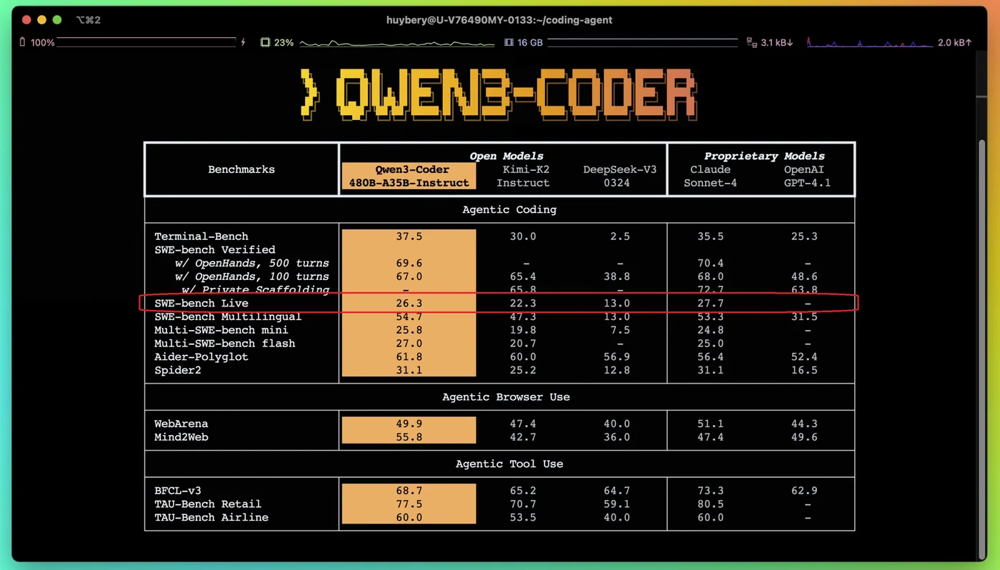
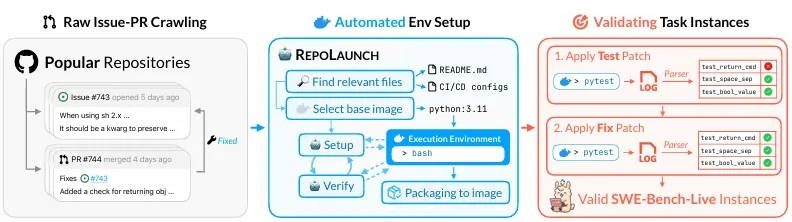
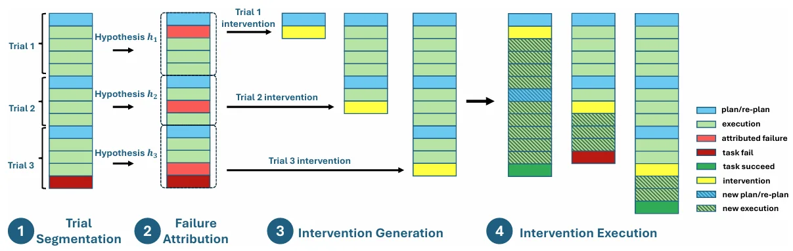
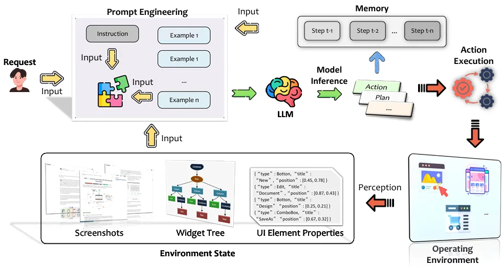
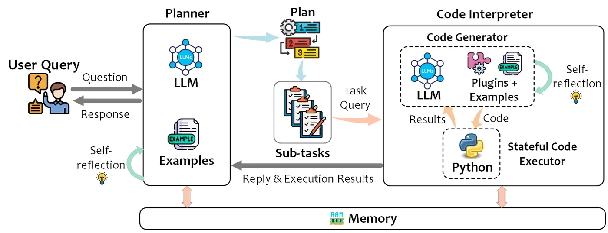
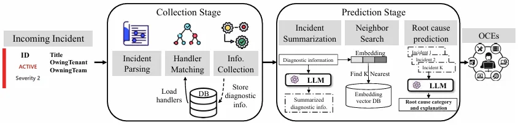
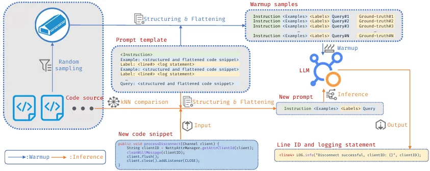

智能体进化与递归自我改进
打通“执行”与“改进”的闭环：智能体诊断自身的失败，改写自己的 harness、工具和策略，并为下一轮改进生成任务与验证信号，让能力提升持续累积，而不是停留在一个固定的模型上。
我的研究横跨人工智能、软件工程与系统三大领域。研究核心是智能体进化与递归自我改进（RSI）：让 AI 智能体从自身经验中持续学习，在真实软件任务上不断变强。其中很重要的一部分是大模型训练，尤其是智能体强化学习（Agentic RL），即在大规模、可执行、可验证的环境中训练模型与智能体。
我的研究与众不同之处在于出发点：真实产品的复杂性。工业级代码仓库规模庞大、技术栈异构、持续演进，还有公开基准从未覆盖的内部工具链、构建系统和任务类型。我把这些复杂性建模为科学问题加以研究，再把成果带回实际场景落地。我率先提出如何将业界产品代码仓库与产品任务转化为可用于编程智能体评测、调优和训练的数据与环境，使大模型和编程智能体在训练与开发阶段就能关注到内部产品，并针对性地优化。
加入华为之前，我在微软 DKI 研究组（数据、知识与智能）工作了八年。期间主导了 SWE-bench-Live 与 RepoLaunch 的研发（RepoLaunch 已被 GLM-5 等前沿开源模型用于构建智能体训练环境），参与了 UFO、TaskWeaver 和 Agent Lightning，并与 10 多个产品团队合作，将 20 多项研究成果落地到产品中，其中包括集成进支撑 Azure 与 Microsoft 365 的微软基础云服务的 AIOps 技术。我同时担任复旦大学计算机科学技术学院行业硕士生导师，博士毕业于香港中文大学，师从吕荣聪教授。
立足人工智能、软件工程与系统的交叉：两个核心方向，一个共同底座，落地到三个应用场景。
智能体的能力不应在发布时就定型。它们从自己的执行轨迹和失败中学习，并且在它们真正要服务的产品上训练，而不只是在公开基准上训练。
打通“执行”与“改进”的闭环：智能体诊断自身的失败，改写自己的 harness、工具和策略，并为下一轮改进生成任务与验证信号，让能力提升持续累积，而不是停留在一个固定的模型上。
在大规模、可执行、可验证的环境中，在真实的智能体 harness 里用强化学习训练代码模型与智能体，涵盖环境构建、奖励与验证设计、轨迹数据和训练框架。Agent Lightning v1.0 仅用 6K 条训练数据，就把 Qwen3.5-9B 在 SWE-bench Verified 上的成绩从 41.8% 提升到 56.4%。
两个核心方向都需要源源不断的可执行任务和可靠的验证。我把产品代码仓库、产品任务和开发历史转化成这样的任务，同一套基础设施同时服务于评测、调优和训练。
我的研究方式：从真实产品的难点出发，把它提炼成科学问题，再把研究成果带回生产环境。
方法在这些场景中落地和检验。
问题修复、测试生成、代码翻译、依赖升级和仓库理解，覆盖开源代码与工业代码。
桌面 AgentOS 与跨设备智能体系统，以及一篇被广泛引用的 LLM GUI 智能体综述。
面向超大规模云的故障检测、分诊、根因分析、日志与监控，已在微软落地。
环境、基准、框架和系统走出了实验室：用于前沿模型的训练与评测，拥有庞大的开源社区，并运行在超大规模生产环境中。
“We employ an environment setup pipeline based on the RepoLaunch framework that scales the construction of executable environments from real-world SWE issues.”
— GLM-5 技术报告，智谱 AI / Z.ai（arXiv 2602.15763）
RepoLaunch 是第一个能在任意语言、任意操作系统上自动解析依赖、编译代码并提取测试结果的智能体，支持 C/C++、C#、Python、Java、JS/TS、Go 和 Rust，覆盖 Linux 与 Windows。它为大规模智能体训练构建了 10,000 多个 Docker 环境。

Qwen3-Coder 发布时，将 SWE-bench-Live 成绩与 Kimi-K2、DeepSeek-V3、Claude Sonnet 4、GPT-4.1 并列报告。
“Our original Agent Lightning introduced a disaggregated architecture that connects arbitrary agents to RL training through an LLM endpoint proxy, an approach later adopted by frameworks such as verl Uni-Agent, AReaL 2.0, slime, and Polar.”
— Agent Lightning v1.0（arXiv 2608.17528）。大意：最初的 Agent Lightning 提出了通过 LLM 端点代理把任意智能体接入 RL 训练的解耦架构，这一方法后来被 verl Uni-Agent、AReaL 2.0、slime、Polar 等框架采用。
与 10 多个微软产品团队（Azure、Microsoft 365、Windows、DevDiv、Copilot）合作落地 20 多项成果：覆盖故障全生命周期的 AIOps，以及为 Azure 和 Microsoft 365 每年节约数亿美元成本的资源管理算法。获专利 10 余项。
按落地采用、引用量或顶会发表精选。主导 表示由我主导的项目。

由自动化流水线构建、持续更新的问题修复基准。RepoLaunch 是一个能在 Linux 或 Windows 上为任意语言的仓库完成配置、构建和测试的智能体，无需人工参与就能把真实问题转化为已验证、可复现的 Docker 任务。基准已扩展出 MultiLang（1,077 个任务 · 8 种语言）和 Windows 子集，流水线达到 ≥98% 的构建/测试成功率，LLM 成本降低 82%。
让产品代码仓库成为可再生的智能体任务来源。Change2Task 把已合入的变更转化为健康新版本上的已验证任务（缺陷修复、功能新增、测试生成、API 迁移、安全修复），已验证构建成功率达 79.6%，比基于 PR 的基线多恢复 29.2% 的任务。另一条相关工作面向企业级智能体持续生成评测基准。





华为 · 软件工程应用技术实验室
智能体进化与 RSI、大模型训练与 Agentic RL，以及面向编程智能体的产品级环境与数据。
微软 DKI 研究组（数据、知识与智能，原属微软亚洲研究院）
主导 SWE-bench-Live 与 RepoLaunch；参与 Agent Lightning、UFO、TaskWeaver，以及与 10 多个产品团队（Azure、Microsoft 365、Windows、DevDiv、Copilot）合作落地的一系列 AIOps 与资源管理系统。
复旦大学 · 计算机科学技术学院
复旦大学 · 计算机科学技术学院
合作导师：王新 教授
香港中文大学
微软亚洲研究院 · 软件分析组
获微软亚洲研究院“明日之星”奖。
杜克大学 · 计算机科学与工程
合作导师：Kishor S. Trivedi 教授
香港中文大学
移动应用性能诊断（DiagDroid，FSE’16）、云服务部署与软件安全。
复旦大学
成绩排名前 5%，连续三年获一等奖学金。
我们的研究团队正在扩充。如果你希望研究智能体进化、Agentic RL，以及能应对真实产品全部复杂性的编程智能体，欢迎联系我。